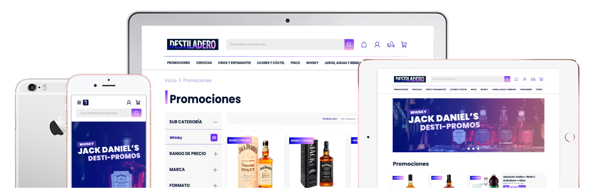
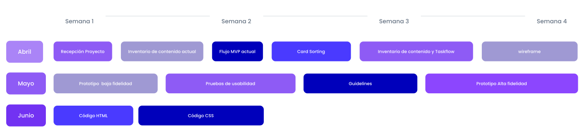

Renovación de la Experiencia de Compra en Destiladero.cl
Como parte de una célula ágil UX/UI trabajamos en la plataforma e-commerce destiladero.cl, una botillería con potencial no explotado en Villa Alemana. La tarea principal fue reactivar y renovar su sitio web que no estaba funcional del todo y tampoco proyectaba la identidad de marca deseada por sus dueños..
Sobre el proyecto
Armados con un arsenal de herramientas de UX research proporcionadas por otra célula ágil, este proyecto nos permitió desplegar un completo conjunto de técnicas de UX/UI. Nuestra misión se centró no sólo en mejorar y enriquecer la experiencia del cliente y facilitar el proceso de compra en línea, sino que también fortalecer la conexión de la marca con su público, todo ello mediante la implementación de un Sistema de Diseño en Figma.
¿Cuál fue mi rol ?
En este proyecto, se optó por un enfoque de colaboración integral sin roles específicos. Todos los miembros del equipo participaron activamente en todas las áreas, lo que promovió una mayor colaboración y comprensión global del proyecto. Si bien todos estuvieron involucrados en todas las etapas, se consideró asignar roles de liderazgo o asesoramiento a aquellos con habilidades especializadas para aprovechar su experiencia y conocimientos.
Research
User Persona
Wireframe
Userflow
Ui Design
Code
Línea de tiempo del proyecto
Realizamos un análisis del sitio, actualizamos el contenido y creamos wireframes. Diseñamos un prototipo básico, lo probamos con usuarios y mejoramos según sus comentarios. Creamos pautas de diseño para mantener la consistencia y luego implementamos un diseño detallado. Finalmente, creamos un prototipo interactivo con HTML y CSS para simular la experiencia del usuario.
Metodología Design Thinking
con enfoque DCU
Empatizar
Comprendemos el problema, definimos una hipótesis y estrategias
Definir
Investigación, benchmark, user persona, mapa de empatía y MVP
Idear
Arquitectura de la información, card sorting, inventario de contenidos, mapa de navegación y taskflow
Diseñar
Propuestas, wireframes, prototipos navegables en baja y alta calidad. Guideline y UI KIT
Validarr
Test con usuarios, insights, análisis y de ser necesario volver a iterar
Comenzamos nuestro trabajo en la etapa de ideación, recopilamos y analizamos la información del equipo de research. Luego, desarrollamos un estilo visual coherente y atractivo, aplicándolo en todas las etapas del diseño. Finalmente, creamos prototipos navegables para simular la experiencia interactiva del usuario.